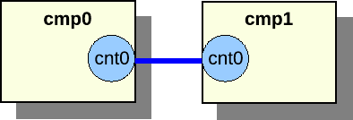
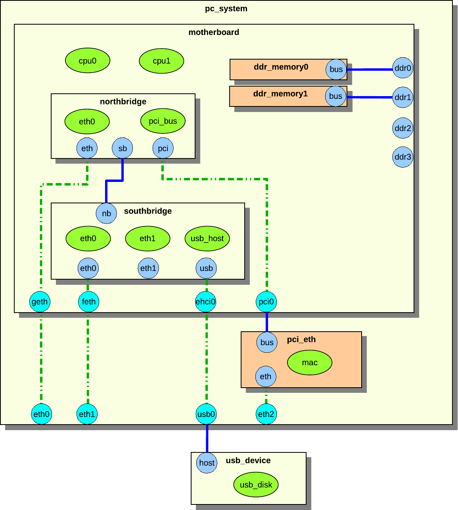

This chapter describes how to write your own Simics components. It assumes you have already read the section about components in the Simics User's Guide, particularly for the definitions.
A component represents a piece of hardware which connects to other parts of system through standardized interfaces. The primary purpose of component in Simics is to manage and encapsulate the complexity inherent in composing a system. Frequently, a component represents a piece of hardware which can be removed from the system and put back in without breaking it or the rest of the system. Some manufacturers refer to this sort of hardware as a Field Replaceable Unit or FRU. Whether modeling FRUs or not, the definition of components should closely follow the structure in the real system. Some examples of real hardware that generally modeled using components are motherboards, compact flash cards, disks, SOCs, and PCI cards.
Components are assembled to construct systems through two primary mechanisms: nested namespaces and connectors. A system will usually use both mechanisms. Namespaces are used to encapsulate parts of the system which from the outside can be considered one unit and connectors are used to connect the components to each other similar to how the real hardware is connected, for example memory slots, PCI slots, Ethernet sockets. When there is a tight coupling between a component and a subcomponent, for example between a board and an SOC, the component can set up the subcomponent and the connections between the two components without using connectors.
Consider a system consisting of a compact PCI chassis with a processor board and several I/O boards. The system runs a single operating system image and is considered a single machine; however, each board is clearly a separate entity from the others and from the chassis. Here, you would use simple connections between the components, with one component for each board and one for the chassis.
Now consider the processor board consisting of an integrated processor SOC, several discrete devices, RAM, and flash. Here, the SOC is clearly a reusable system with sufficient complexity that it should be encapsulated in a component, but the board is meaningless without the SOC. Thus a component should be used to represent the SOC, with the board being a component that contains the SOC. Since the board has such a strong dependency on the SOC it does not need to use a connector to connect to it, instead it can create the SOC component itself and set up the connections manually.
Namespaces are described in section 24.2, while component hierarchies are described in 24.3. To summarize, a namespace composition is used to describe components that consists of other components, while connectors are used to connect components to each other.
A component is a generic Simics class, with the special ability to contain class instances. Each instance of a component represents a namespace described in section 24.2.1. In this chapter, we will refer to a component instance as a component, and the class instances within the component as objects.
More specifically, a component class is a Simics class written in Python that implements the component interface. Details of writing components are described in section 24.6. The component interface is documented in section 24.8.1.
A number of ready to use components are provided with Simics. Some of these are standard components that can be used in many kind of systems. Examples of standard components are disks, flashes, text consoles, etc. Other components are specific to a particular system, such as an evaluation board.
A component module is a Simics module containing the implementation of one or more related components. The examples-comp module, for example, contains a set of example components. It will be used as an example in the following sections. It can be found at [simics]/src/components/.
Additional examples of flat components that do not support hierarchical composition can be found in the [simics]/src/extensions directory. These components are still supported, but they will not be discussed in this chapter.
When adding a component to a project, the component module source directory is placed in [project]/modules/component_module_name, and contains one component_module_name.py file, one Makefile and optionally one PNG image file for each top-level component.
The Makefile is essentially identical for all component modules; it simply points out the .py file that is part of the module. Section 24.6 describes how to create new components.
All components also define its own namespace for other components and objects. Placing a component in another component's namespace is used to model systems composed of reusable subsystems that do not individually stand alone.
Figure 8. Example of a namespace hierarchy
Figure 8 shows an example system with one root component called cmp0 with two sub components, cmp1 and cmp2. The cmp1 component contains the obj object. Each component has a separate namespace. The namespaces form a tree of components. The cmp1 component is in the cmp0 component's namespace.
All objects have a name. For objects in the global namespace the name is simply a string given at its creation. Objects in other namespaces have names that depend on their location in the hierarchy. These names depend on which slot in the parent the object is placed in.
Slots are something all components have, and which mainly define the names of its children. Each slot has a name and a value. The value is often just an object reference. Other possible values are None or nested lists with objects references and Nones as elements. A slot with None value is called an unoccupied slot.
An object in a component has a local name and a full name. The local name is called slot name or simply slot. An object's slot name is the name of the slot it belongs to concatenated with its index in the slot. Assume that a component cmp has the slot sub with an object reference to the object A. The object A has the slot name sub and the full name cmp.sub. Now assume that the component cmp has the slot sub with a list of two object references to object B and object C. The object B has the slot name sub[0] and the full name cmp.sub[0].
In figure 8 the sub components names are actually the slot names. Both cmp1 and cmp2 are slots in cmp0. The cmp1 component in figure 8 has the full name cmp0.cmp1. All object names in the figures in this chapter are local names.
A component can be connected to components on the same hierarchical level or to a parent or child component; see section 24.4.
Component namespaces provide scoping for names in a manner similar to syntactic blocks in programming languages. As with programming structure, it is easier to understand when a minimal number of names are defined in the global scope or namespace. Another good analogy is a file system directory structure.
A component or object can be added to a component's namespace on definition, or after creation at run-time using the move-object command.
Ex. move component cmp1 to cmp0 as "cmp1":
simics> move-object src = cmp1 dst = cmp0.cmp1
Moving an object to a component puts the object in its namespace. This is done by putting the object in a slot in the component. The object can now be accessed relative to the parent component in CLI, Python, or in the Simics API.
Moving an object to a different hierarchical location changes its full name. The cmp1 is now accessed using the hierarchical name cmp0.cmp1, the slot name is cmp1.
Ex. execute info command for cmp1 in CLI:
simics> cmp0.cmp1.info
Ex. access queue attribute for cmp1 in CLI:
simics> cmp0.cmp1->queue
Ex. access queue attribute for cmp1 in Python:
simics> @conf.cmp0.cmp1.queue
Ex. get cpu object from cmp1 in Python:
simics> @conf.cmp0.cmp1.cpu
A normal object can only exist in one namespace at a time; only connector objects can exist in several namespaces. Connector objects are documented in section 24.4.2. Connector objects can be copied to a new namespace using the copy-connector command.
Ex. copy connector object cmp0.cmp1.port0 to cmp0 as "copy0":
simics> copy-connector cmp0.cmp1.port0 cmp0.copy0
The connector object can now be accessed as cmp0.copy0 or cmp0.cmp1.port0, and has two parents. The owner of the connector object is not changed and is still the cmp0.cmp1 component.
The component interface has functions to add and remove objects from a components namespace, which is used by the move-object and copy-connector commands.
The alias command can be used to avoid having to write the complete hierarchical name several times for often-used objects:
Ex. alias for cmp1 in CLI:
simics> alias short cmp0.cmp1.port0
simics> short.info
Objects, attributes, and commands sometimes share the same namespace name, resulting in conflicts. Consider a root component named cmp0 with an object in slot cpu and also has a command called cpu that prints all processors in the components. There will be a conflict when typing cmp0.cpu on the command line.
You should try to avoid such name conflicts, and Simics will print a warning message if any are detected. If there are conflicting names, the following precedence describes how the name is interpreted.
The order in decreasing precedence is:
slots,
attributes, and
commands.
Thus continuing the example above, cmp0.cpu is an object reference, not a command.
To model how the parts of a system are connected to each other components are connected to each other using connectors. The connectors allow you to build a system that consist of reusable components. The connections form a graph separate from the namespace hierarchy.
Components in the global namespace which represent systems of interest to the user should be top-level components. A top-level component's main responsibility is to provide informational metadata in some standardized attributes which are mainly used by Simics's graphical tools; see the details in 24.8.3. The user can set which components he wants as top-level components when he configures the system. For example, a compact PCI form factor single board computer can either be the top-level component in a standalone system or part of a chassis based system, where the chassis would be the top-level component.
Components can connect to other components via connector objects (described in more detail in section 24.4.2). The connector objects used for connecting components must implement the connector interface. The connector interface description can be found in section 24.8.1.
Figure 9. Example component connection
In figure 9, the southbridge component is connected to the usb_device component. The southbridge component contains the usb_host object, and the usb_device component contains the usb_disk object. It is the components that set up the connection through their connectors, but it is the usb_host and usb_disk objects that are connected via interfaces. The usb_host object has a usb_devices attribute that connects to the usb_device interface on all connected usb device objects. The usb_disk object has a usb_host attribute that connects to the usb interface of the host object. Data exchanged during the connection process sets the attributes to appropriate values. A component connection between two components can exchange data to set up multiple attributes for several objects in the components.
A component connector has several properties that define the type of connection. The properties are defined in the connector interface, which is implemented by all component connectors.
type
Components have connectors of different types. Two connectors can only be connected if the types are identical. The most common types are standard hardware connectors such as Ethernet and serial.
hotpluggable
A connector is hotpluggable if the connector supports connecting and disconnecting after the component has been instantiated. For example, a USB device connector is often hotpluggable, while a processor connector usually is not.
required
A connector that is required must be connected when the component is instantiated, otherwise will an error be generated. Processor connectors on board components are often required as the system cannot be setup without processor.
direction
The direction is either up, down or any. It is only possible to connect connectors of different directions. The direction of a connection determines if the connection defines the two components as part of the same connected tree or not. Up and down connectors imply that the connector defines a tree relationship, while any connectors do not imply any tree relationship. Additionally, the direction defines the order in which components in a component tree are instantiated. The top-level component is visited first, and then all components that are connected to its down connectors. This process is continued recursively until all components in the tree have been visited.
A top-level component is not allowed to have any up connectors, and its any connectors can only be connected to other up connectors. Top-level components must also be root components of their hierarchies.
Component connector objects are normal Simics objects that implement the connector interface. Connector objects contain only the functionality needed to set up the connections between objects within the components they connect.
Connector objects are explicitly defined in the component class. The connector objects will be created when an instance of the component class is created. Defining a connector will automatically put the connector object in its component's namespace, i.e., all connectors will exist in a slot in a component.
A component can inherit another component's connectors. This can either be done using the copy-connector command at run-time, as described in section 24.2.1, or when defining a component, as described in section 24.6.11.
Component connectors are connected using the connect command, which takes the two component connector objects as parameters.
Ex. connecting cmp0 and cmp1 in figure :
simics> connect cmp0.cnt0 cmp1.cnt0

Figure 10. Component connection between components on the same level
Figure 11. Component connection between component parent and child
Two components can only be connected if they are siblings in the namespace hierarchy or if they are parent and child. The former is illustrated in figure 10, the latter in figure 11.
When making a component into a sub component of another component, it is often desirable to expose the sub component connectors as connectors of the parent component. This is very simple, as it is possible to add a reference to the sub component's connector to the parent component.
Figure 12. Connector reference
Assume we have two components, cmp0 and cmp1. The cmp1 has a connector object named cnt0. First add cmp1 to cmp0 and then add a reference:
The legacy Ethernet link component using the std-ethernet-link class is not compatible with the new hierarchical components. The new Ethernet link components ethernet_cable, ethernet_hub, and ethernet_switch should be used with hierarchical components.
A component goes through several phases, from creation to fully instantiated component connected to other components with a lot of sub components and objects.
These are the phases:
1. Creation Phase
The first step to become full-grown component is to be created. A component can either be created as a non-instantiated component or as an instantiated component. A component can only be created and instantiated in one command if it does not contain any required connectors. When setting up a system it is most common to create non-instantiated components, so we will focus on this in this section.
2. Setup Phase
Once the component has been created it is time to initialize it. It is now possible to set the component attributes that were not set when the component was created.
3. Connect Phase
Next step in the life of a component is to look at the surroundings and connect to other components. All required connectors must be connected. It is a good idea to also connect all optional connectors.
4. Instantiate Phase
When all connections are setup it is time to become instantiated. In the instantiate phase all objects in the component and all connected components are created. This must be done atomically, as objects might have attributes pointing to objects in other components in the tree.
The components are created using the create-name-of-component command, which will create a non-instantiated component.
The first argument to the create- command is the name of the component. The components default name will be used if the name is not provided when creating the component. The default name is defined by the basename class attribute. The basename attribute is set to component for all components that are based on the StandardComponent class, but it can be overridden in the inheriting class.
The remaining arguments to the create- command are the config attributes, see section 24.6.6. The config attributes are either required or optional. All required attributes must be set when the component is created.
All attributes that were not set during the creation phase, but should be set are set in the setup phase. Some attributes might depend on other components or one script creates the component and another script setup the components.
All required connectors must be connected before the component is instantiated. Required connectors might for instance be connectors for connecting a processor to board. The objects on the board component require the processor object in the processor component to function.
The component can be instantiated when all connectors have been connected. The instantiation process will collect all pre objects in the component and create new real objects to replace the pre objects.
The component interface has two functions that will be called in the instantiate process. The pre_instantiate function will be called right before the component is instantiated. The function returns True if the component is allowed to be instantiated. The post_instantiate function will be called right after the component is instantiated. This function is a good place to add code that requires real objects from the component.
This section describes how to implement components. All examples in this section are fully functional and are included in the examples-comp module. To test the examples, start the vacuum target machine and load the examples-comp module.
The source code for the component examples can be found in [simics]/src/components/examples-comp/examples_comp.py.
This will create skeleton code for a new component in the [project]/modules/my-own-component/ directory, with all files needed to build it as a Simics module.
Simics includes the comp Python module that greatly simplifies writing components. The module contains all functionality needed for creating a component.
The comp module and its classes and methods are documented in section 24.11. This help for writing components is only available in Python, as Python is the only language supported for writing components.
To use the comp module, make sure your Python file contains:
from comp import *
The comp module contains the StandardComponent class that should be used as base class when creating new components. The class contains a lot of useful methods and parameters to define a new component. The comp module also contains other classes that are based on the StandardComponent class. These classes will be described later.
Here is an example how to create a simple component:
import simics
from comp import *
class emmett(StandardComponent):
"""The long description for the Emmett component."""
_class_desc = 'short Emmett description'
In the example we create the component class emmett. The first string in the class is a long description of the component that can be several sentences. The _class_desc is a short class description beginning with lower case, without trailing dot, and at most 50 characters long. The longer description is used in the help commands and reference manuals, while the shorter description is used for example in the GUI to describe the component.
Upon registration, the newly defined component registers itself as a common Simics class which allows instances of it to be created like for any other Simics object. By inheriting the StandardComponent, the component will also get a set of predefined attributes that all components should have; see section 24.8.3. The default value and functionality for the attributes can be overridden if needed; see section 24.6.7.
All components will also automatically define a few default commands. new-name-of-component will create an instantiated component of the type name_of_component. create-name-of-component will create a non-instantiated component. Note that underscores are converted to dashes for class name for the new- and create- commands. The component will also automatically get info and status commands.
simics> load-module examples-comp
simics> new-emmett name = my_emmett
Created instantiated 'emmett' component 'my_emmett'
To define a top-level component, override the top_level class definition in the StandardComponent class like this:
class mcfly(StandardComponent):
"""The McFly component."""
_class_desc = 'a McFly component'
class top_level(StandardComponent.top_level):
def _initialize(self):
self.val = True
In this example, we override the default value for top_level. The top_level attribute is by default set to False. Section 24.6.7 says more about how to override the default attribute functionality. It is possible to change a non top-level component into a top-level component by setting the attribute when creating it or at run time.
The StandardComponent class is defined in the comp Python module. The class is based on pyobj.ConfObject, from which it inherits some rarely used methods (see section 15.3).
The StandardComponent class adds a method setup, which is called after all attributes of a component object's have been set. This method is often used for adding new objects to the component. Objects should only be added if the component has not been yet instantiated. This makes the setup methods very similar in all components. The instantiated attribute is checked to determine if we should add new objects or not. More information about attributes can be found in section 24.6.5.
class tyrell(StandardComponent):
"""The Tyrell component."""
_class_desc = 'a Tyrell component'
def setup(self):
super().setup()
if not self.instantiated.val:
self.olws = 1
self.add_tyrell_objects()
def add_tyrell_objects(self):
self.add_pre_obj('mem', 'memory-space')
class sebastian(tyrell):
"""The Sebastian component."""
_class_desc = 'a Sebastian component'
def setup(self):
super().setup()
if not self.instantiated.val:
self.add_sebastian_objects()
def add_sebastian_objects(self):
self.add_pre_obj('mem', 'memory-space')
The setup method corresponds to the finalize field in the class_info_t struct that is passed to the SIM_create_class function, see the Simics Reference Manual.
To prevent name conflicts when using class inheritance, use unique names for the methods that add objects. For example, tint the method name with the name of its class, such as `add_banana_objects()` in class "banana". A component that inherits another component class and calls its `setup` method with *self* can cause problems when the method that adds objects has the same name in both classes.
The StandardComponent class defines the _finalize method which also the pyobj.ConfObject class defines. Old components often implement this method. It is not recommended to implement the _finalize method, the setup method should instead be implemented to get better component error messages on component exceptions.
class roy_batty(StandardComponent):
"""The Roy Batty component."""
_class_desc = 'a Roy Batty component'
def _initialize(self):
super()._initialize()
self.replicants = 4
def _finalize(self):
super()._finalize()
if not self.instantiated.val:
self.add_roy_batty_objects()
def add_roy_batty_objects(self):
self.add_pre_obj('mem', 'memory-space')
The StandardComponent class in the comp module includes parameters that can be set to control the component behavior. Since the StandardComponent class is based on pyobj.ConfObject, also see the parameters defined in 15.4.
_help_categories
Set this to a tuple of help category names; the component commands will appear under these categories in the help command. For example, if you are modeling a PCI Ethernet card, you might want to set it to ('Ethernet', 'PCI').
_no_new_command
Set it to object() to make sure that the component class does not automatically get a new- command registered. This is useful for components that require a connection before they can be instantiated.
_no_create_command
Set it to object() to make sure that the component class does not automatically get a create- command registered.
class henry_hill(StandardComponent):
"""The wiseguy, Henry Hill component."""
_class_desc = 'a Henry Hill component'
_do_not_init = object()
class frankie_carbone(henry_hill):
"""The wiseguy, Frankie Carbone component."""
_class_desc = 'a Frankie Carbone component'
_help_categories = ('Goodfellas',)
def _initialize(self):
super()._initialize()
A component that inherits the StandardComponent class creates a new attribute by defining a new class in the component class that inherits the Attribute class, which is defined in the pyobj module. See the section 15.5.
The comp Python module provides the ConfigAttribute class and the SimpleConfigAttribute function for creating parameterized config attributes. Attributes that are used to parameterize the component will automatically become arguments to the new- and create- commands. This allows for an easy way to create a component with the desired parameters.
Because config attributes are used as arguments to new- and create- commands, they must be documented. Hence the default value of the attrattr class member is Sim_Attr_Optional.
Config attributes are created like this:
class ripley(StandardComponent):
"""The Ripley component."""
_class_desc = 'a Ripley component'
def setup(self):
super().setup()
print("sequels is", self.sequels.val)
print("eggs is", self.eggs.val)
print("marine is", self.marine.val)
class sequels(SimpleConfigAttribute(
None, 'i', simics.Sim_Attr_Required, [4])):
"""Number of sequels."""
class eggs(ConfigAttribute):
"""The number of hatched eggs."""
attrtype = "i"
valid = [821, 1023]
def _initialize(self):
self.val = 50
def getter(self):
return self.val
def setter(self, val):
if val == 0:
return simics.Sim_Set_Illegal_Value
self.val = val
class marine(SimpleConfigAttribute(
'hudson', 's', val = ['hudson', 'gorman', 'vasquez'])):
"""The name of the marine."""
An optional config attribute such as eggs becomes an optional argument to the new- and create- commands for the component. A required attribute such as the sequels attribute becomes a required argument when creating the component.
simics> load-module examples-comp
simics> new-ripley name = my_ripley sequels = 3
sequels is 3
eggs is 50
marine is hudson
Created instantiated 'ripley' component 'my_ripley'
Use the SimpleConfigAttribute function when a simple attribute without any special functionality is required, just like the SimpleAttribute function is used.
The ConfigAttribute class contains a valid attribute which is a list of valid values. The list gives the user a hint about valid values when creating a component. There is no check that the value written to the attribute is a value in the list of valid values. The list of valid value(s) does not need to contain the default initial value for the config attribute, but it usually does. The valid list should at least contain one valid value even if several values are valid.
The StandardComponent class defines a set of attributes that all components should implement. The attributes are described in detail in the section 24.8.3. All of the attributes can be overridden if needed.
Here is an example how to override the component_icon attribute:
class nemo(StandardComponent):
"""The Nemo component."""
_class_desc = 'a Nemo component'
class component_icon(StandardComponent.component_icon):
def _initialize(self):
self.val = "stanton.png"
The new component icon attribute example code only overrides the initial value, but it is also possible to override anything in the class definition, such as the getter or setter methods, if required.
A component can define slots. A slot has a name and a value, often a single object. Slots can be defined in the component; however, new slots can also be added after a component has been created, but that will not be discussed in this section. Slots defined in the component are called static slots. Static slots cannot be removed after the component has been created. The value in the slot can be changed at any time. The name of the slot is used to access an object in the slot.
Common Simics objects are added to a component using the add_pre_obj method. The method will create pre objects that will be converted to real objects when the component is instantiated.
class wall_e(StandardComponent):
"""The WALL-E component."""
_class_desc = 'a WALL-E component'
def setup(self):
super().setup()
if not self.instantiated.val:
self.add_wall_e_objects()
def add_wall_e_objects(self):
p = self.add_pre_obj('p_mem', 'memory-space')
v = self.add_pre_obj('v_mem', 'memory-space')
self.add_pre_obj('clock', 'clock', freq_mhz = 10)
p.map = [[0x100, v, 0, 0, 0x10]]
class cpu_list(StandardComponent.cpu_list):
def getter(self):
return [self._up.get_slot('clock')]
The component in the example defines three objects and three slots to hold references to them. The add_pre_obj function has two required and two optional arguments. The two required arguments are the slot name and the class name. The third argument is optional and specifies the name of the object. The name defaults to an empty string and will be the object's hierarchical name, it is not shown in the example and it should only be used in special cases and then it is given as name = "pineapple". The fourth argument is also optional and is attribute values for the object. The add_pre_obj function returns a pre_conf_object or an array of pre_conf_objects.
The p_mem and v_mem slots contain memory-space objects and the clock slot contains a clock object. In this example, we save references to the added objects in p and v to make it easier when setting attributes for the objects.
A slot value can be extracted with the get_slot method in the StandardComponent class. The method takes the slot name as argument. Note that to access the component class from the cpu_list attribute class the _up member is required.
The add_pre_obj function can create nested arrays of identical objects. This is done by adding an index suffix to the slot name. All created objects are returned as nested array corresponding to the suffix. Here is an example that better explains how it works:
class hal(StandardComponent):
"""The HAL component."""
_class_desc = 'a HAL component'
def setup(self):
super().setup()
if not self.instantiated.val:
self.add_hal_objects()
self.do_hal_stuff()
def add_hal_objects(self):
self.add_pre_obj('clock', 'clock', freq_mhz = 2001)
self.add_pre_obj('p_mem[4]', 'memory-space')
self.add_pre_obj('v_mem[6][10]', 'memory-space')
def do_hal_stuff(self):
c = self.get_slot('clock')
self.get_slot('p_mem[1]').queue = c
self.get_slot('p_mem')[1].queue = c
self.get_slot('v_mem[2][3]').queue = c
self.get_slot('v_mem[2]')[3].queue = c
self.get_slot('v_mem')[2][3].queue = c
The p_mem and v_mem slots both contain arrays of objects. The p_mem slot contains an array of 4 elements where each element is a memory-space object. The v_mem slot contains an array of 6 elements where each element is an array of 10 memory-space objects, i.e. totally 60 objects.
The do_hal_stuff method fetches the slots using the get_slot method. The slot argument can either be indexed or the indexing can be done after getting the slot. The two lines that work on the p_mem slot do the same and the three lines that work on the v_mem slot do the same thing.
Slot arrays are supported and can sometimes help when having many objects. Here is the output from using the arrays in the hal component class.
The add_pre_obj method supports None as slot argument. This means that the pre objects will be created and returned by the method, but they will not be added to any slot. The pre objects can later be added to a slot using the add_slot method.
class marvin(StandardComponent):
"""The Marvin component."""
_class_desc = 'a Marvin component'
def setup(self):
super().setup()
if not self.instantiated.val:
self.add_marvin_objects()
def add_marvin_objects(self):
self.add_pre_obj('clock', 'clock', freq_mhz = 2001)
p_mem = [None,
self.add_pre_obj(None, 'memory-space'),
self.add_pre_obj(None, 'memory-space'),
None]
self.add_slot('p_mem', p_mem)
This example shows how to create a slot with an mixed array of None and pre objects. The first and the last elements in the slot are unoccupied. The two middle elements contain pre objects. Here is the output when getting the slot value:
simics> new-marvin name = my_marvin
Created instantiated 'marvin' component 'my_marvin'
simics> my_marvin.p_mem
[NIL, "my_marvin.p_mem[1]", "my_marvin.p_mem[2]"]
Connectors are added to components similarly to how objects are added to slots, see 24.6.9. A component that has connectors must implement the component_connector interface. Below we describe how to add connectors either by explicitly implementing the component_connector interface in section 24.6.10.1, or using connector classes in section 24.6.10.2.
The example component creates one connector in the slot eth0, one array of two connectors in the slot uart, and one connector in the slot debug.
The connector objects are created at once when adding a connector slot with the add_connector method. The function returns the objects or nested arrays of objects if the slot was specified, otherwise the function returns pre objects or nested arrays of pre objects, like the dbg connector in the example. In the latter case the objects are created when they are assigned to a slot using the add_slot function. This is to avoid creating connectors that are never assigned to any slot and therefore are useless.
The component implements the component_connector interface to handle the connector functionality. The interface is documented in the API Reference Manual. The different connector types are documented in section 24.10.
Most connectors are simple connectors with standard behavior. This makes it possible to use the same code for several components. The StandardConnectorComponent class in the comp Python module helps with this. The StandardConnectorComponent class inherits the StandardComponent class and supports the same features as that class. In addition the StandardConnectorComponent class implements the component_connector interface and a new definition of the add_connector method. The function takes a connector class as argument. The connector class provides all functionality for handling the connection.
The most common standard type of connectors has predefined connector classes. They are included in the connector Python module. This module is imported by the comp module, so there is no need to import it explicitly. The source code for these classes can be found in [simics]/src/core/common/connectors.py.
class gertie(StandardConnectorComponent):
"""The Gertie PCI component."""
_class_desc = "a Gertie PCI component"
_help_categories = ('PCI',)
def setup(self):
super().setup()
if not self.instantiated.val:
self.add_gertie_objects()
self.add_gertie_connectors()
def add_gertie_connectors(self):
self.add_connector('pci', PciBusUpConnector(0, 'sample_dev'))
def add_gertie_objects(self):
self.add_pre_obj('sample_dev', 'sample_pci_device',
int_attr = 10)
Note that connectors instantiating a helper connector class that handles the connection must instantiate the connector class even if the component has been instantiated. The call to add_gertie_connectors in the example is independent of the instantiated attribute. This would otherwise result in an error when loading a checkpoint as the checkpoint will not contain the information about the helper class.
This is important to understand when using dynamic connectors (i.e. connectors created on demand); the component must be able to recreate the helper connector classes when a checkpoint is loaded. If the component did not do this, the checkpoint would load (and the system would run), but you would not be able to connect or disconnect any connectors. One way to determine which helper connectors to recreate is to look at attributes (or attributes of objects in the component).
One standard connector class is the PciBusUpConnector. The class takes fun_num and device as arguments. The fun_num is the function number and the device is the slot name of the PCI device that should be added to the PCI bus. The slot name must be given as a string.
It is possible to create own connector classes by inheriting from the StandardConnector class.
class HarpoonUpConnector(StandardConnector):
def __init__(self, device, required = False):
if not isinstance(device, str):
raise CompException('device must be a string')
self.device = device
self.type = 'harpoon-bus'
self.hotpluggable = False
self.required = required
self.multi = False
self.direction = simics.Sim_Connector_Direction_Up
def get_check_data(self, cmp, cnt):
return []
def get_connect_data(self, cmp, cnt):
return [cmp.get_slot(self.device)]
def check(self, cmp, cnt, attr):
return True
def connect(self, cmp, cnt, attr):
(num,) = attr
cmp.get_slot(self.device).int_attr = num
def disconnect(self, cmp, cnt):
cmp.get_slot(self.device).int_attr = 0
class brody(StandardConnectorComponent):
"""The Brody component."""
_class_desc = 'a Brody component'
def setup(self):
super().setup()
if not self.instantiated.val:
self.add_brody_objects()
self.add_brody_connectors()
def add_brody_connectors(self):
self.add_connector('jaws', HarpoonUpConnector('sample'))
def add_brody_objects(self):
self.add_pre_obj('sample', 'sample_device_dml')
The first example just shows how to add a sub component.
class hunt(StandardConnectorComponent):
"""The Hunt component."""
_class_desc = 'a Hunt component'
class impossible(SimpleAttribute(False, 'b')):
"""True if impossible, default is False."""
def setup(self):
super().setup()
if not self.instantiated.val:
self.add_hunt_objects()
self.add_hunt_connectors()
def add_hunt_connectors(self):
self.add_connector('mission1', HarpoonUpConnector('sample'))
self.add_connector('mission2', HarpoonUpConnector('sample'))
def add_hunt_objects(self):
self.add_pre_obj('sample', 'sample_device_dml')
self.add_pre_obj('clock', 'clock', freq_mhz = 4711)
class ethan(StandardConnectorComponent):
"""The Ethan component."""
_class_desc = 'an Ethan component'
def setup(self):
super().setup()
if not self.instantiated.val:
self.add_ethan_objects()
def add_ethan_objects(self):
self.add_component('last', 'hunt', [['impossible', True]])
self.copy_connector('copy', 'last.mission1')
mem = self.add_pre_obj('mem', 'memory-space')
mem.queue = self.get_slot('last.clock')
The ethan component in the example creates a sub component with the slot name last of the hunt class type.
The ethan component also copies the mission connector from the last component and puts it in the slot copy. This kind of copy can only be done for connector objects. Note that this is a superior solution to the runtime command copy-connector, which has the same effect at run time but does not update the documentation and requires care when checkpointing.
Note that the get_slot and copy_connector methods can get slots not only in the components own namespace but in the sub components namespace. In the example this is done by the self.get_slot('last.clock') call. It is also possible to access slots in a sub component to the sub component. There is no limit to the look-up depth.
The leeloo component creates a korben sub component and zorg sub component. The two sub components are connected using the connect method. Arguments to the method are the connectors in the sub components.
A connector can support connecting to multiple connectors or just one other connector. This is defined by the multi attribute for the connector. Connectors that connect to multiple connectors are not recommended, it is often better to support dynamic connectors, i.e. new connectors that are created when required.
Here is an example how to create connectors when needed, the example can be found in [simics]/src/components/sample-dynamic-connectors:
import simics
from comp import *
class sample_dynamic_connectors(StandardComponent):
"""A sample component dynamically creating connectors."""
_class_desc = "sample comp with dynamic connectors"
def setup(self):
super().setup()
if not self.instantiated.val:
self.add_objects()
class top_level(StandardComponent.top_level):
def _initialize(self):
self.val = True
class num_serials(SimpleAttribute(0, 'i')):
"""Number of serial connectors"""
def create_uart_and_connector(self):
num = self.num_serials.val
self.add_connector(
'uart%d' % num, 'serial', True, False, False,
simics.Sim_Connector_Direction_Down)
if self.instantiated.val:
o = simics.SIM_create_object('NS16550', '')
else:
o = pre_obj('', 'NS16550')
self.add_slot('uart_dev%d' % num, o)
self.num_serials.val += 1
def add_objects(self):
self.add_pre_obj('clock', 'clock', freq_mhz = 10)
self.create_uart_and_connector()
class component_connector(Interface):
def get_check_data(self, cnt):
return []
def get_connect_data(self, cnt):
self._up.create_uart_and_connector()
num = int(cnt.name.split('uart')[1])
return [None, self._up.get_slot('uart_dev%d' % num), cnt.name]
def check(self, cnt, attr):
return True
def connect(self, cnt, attr):
num = int(cnt.name.split('uart')[1])
udev = self._up.get_slot('uart_dev%d' % num)
(link, console) = attr
if link:
udev.link = link
else:
udev.console = console
def disconnect(self, cnt):
num = int(cnt.name.split('uart')[1])
udev = self._up.get_slot('uart_dev%d' % num)
udev.link = None
udev.console = None
The create_uart_and_connector method in the sample_dynamic_connectors component creates a new uart connector object and a uart device. The function is called each time someone connects to one of the component's connectors and when the component is created. This means that the component will have one empty connector when the component is created and there will always exist at least one empty connector in the component.
The example code does not handle disconnecting and removal of unused connectors. This means that there might exist more than one empty connector. But it is just an example that can be used as reference.
The sample component is a very simple component that can be used as reference when writing a component. The source code can be found in the src/components/sample-components directory. The sample-pci-card can for instance be added to the Firststeps machine. This Firststeps machine is in QSP-x86 Package.
Here is an example how to add a new PCI card from the command line:
This section describes a hierarchical system with components. We use the simple PC system in figure 13 as an example.

Figure 13. Example hierarchical system
The system in figure 13 consists of the pc_system, motherboard, northbridge, southbridge, pci_eth, usb_device, and two ddr_memory components.
The components contains both regular objects (drawn as ellipses in the figure), and sub components (drawn as rectangles with drop shadows). An object can be a processor, device, or an extension. Remember that an extension is something that add simulation functionality, such as a trace object.
The blue and cyan circular objects on the edge of the components are connectors. A blue connector is a connector that is owned by the component it is in. A cyan connector is an inherited connector from another component. An inherited connector can also be seen as a reference connector. The dashed line shows how the connector has been inherited. The connector called eth in northbridge has been inherited to motherboard as geth, and geth has been inherited by pc_system as eth0. The pc_system component could inherit eth directly from northbridge, but that is not the case in this example. We will not distinguish reference connectors from real connectors in this section, as they look identical to an outside observer. Only the component designer who sets up the system needs to be aware of the distinction.
Connectors can be connected to other connectors, forming connections. The solid blue lines in the figure are connections. Two connectors can only be connected if they belong to components that are on the same hierarchical level, or if one of the components is a sub component of the other. The northbridge and southbridge components are on the same level, and they can connect to each other through their connectors. The ddr_memory and motherboard components can be connected because the ddr_memory components are sub components of motherboard.
The pc_system component contains all components in its component tree except usb_device. Both pc_system and usb_device are on the same level—in this case, the so-called root level.
The pci_eth and ddr_memory0_1 components have a different color to indicate that they were not defined in the pc_system component, but added at runtime. The pc_system.ddr2_3 connectors have not been connected to any component.
Figure 14. Object connections in a hierarchical system
It is actually objects that must be connected (see section 24.7.2); the component connectors merely provide a way of sending the data between components needed for setting up the object attributes. Figure 14 shows the components and the objects from figure 13, but now the actual connections between the objects are in focus. The dashed lines between the objects show how the objects are connected. A lot of the objects are connected to the pci_bus object. This is very common on a generic PC system. Even objects that are not in the same component tree are connected, e.g., the usb object and the usb_disk object.
This section describes how to create a system consisting of only root components in component hierarchies. Although it is better to create hierarchical system models as shown in the example in section 24.7.2, the creation of flat systems is supported. The flat system modeling concept is primarily useful when modeling a system that is best described as a "collection of peers", such as a rack of computers. Additionally, several standard system models provided with Simics are implemented as flat systems, since hierarchical components were not supported when these systems were built. It is expected that all such systems will be upgraded to hierarchical models over time.
Figure 15. Example of a flat system
Figure 15 shows a flat system representation of the system shown in figure 13. The difference is that there are no hierarchical components in figure 15.
The biggest advantage of hierarchical systems over flat systems is clarity. In a hierarchical configuration, objects, commands, and attributes are only accessible via their hierarchical name in the hierarchy, and do not clutter the top-level namespace. This is particularly important for large systems with many objects. Consider a big rack with several boards, each with several devices and processors. Simics requires that all objects at the same level of the namespace have unique names. Thus, objects of the same type in different parts of the system either need long, essentially hierarchical, names; or else the user must remember which randomly named objects make up which part of the system. Using hierarchy reduces complexity by providing a system for naming.
This section documents the set of interfaces that every component is required to implement. These interfaces ensure that the component works with Simics commands and the API that operates on components. See 24.11 for the default implementations provided by the comp Python module.
All component classes must implement the component
interface. All functions in the interface must be implemented.
The pre_instantiate function is called before the
component is instantiated. The function returns true if the
component can be instantiated, or false if not.
The component might need to do some extra work after the component
has been instantiated. This should be done when called via the
post_instantiate function.
The create_cell function returns true if the
configuration system can create a default cell object for the
component, or false if not. Both
pre_instantiate and create_cell typically
return true.
Component has slots. A slot has key and value. The key is the slot
name as a string. The value is a conf object, a pre conf object, or
None, or nested lists of such types.
Slots are either defined in the component or added after the
component has been created. Slots defined in the component are
static slots which can not be deleted, but the slot value can be
changed. Slots added to the component after creation are
dynamic slots and they can be removed when wanted.
The get_slots function returns a dictionary with slot
names as dictionary keys and slot values as dictionary values.
The get_slot_objects function returns a list of all conf
objects and pre conf objects extracted from all slot values.
The get_slot_value returns the slot value. The slot name
is passed as slot argument. A slot value is set using
the set_slot_value function. The value
argument should be a conf object, pre conf object, or None, or
nested lists of such types. The get function returns NULL on failure.
The set function does not return anything to indicate failure.
The has_slot function returns true if the
slot exists, otherwise false. The slot can
either be a static slot or a dynamic slot. The add_slot
function adds the slot named slot. Adding a slot can
fail if the slot already exist. The added slot will be a dynamic
slot. A dynamic slot can be deleted. The del_slot
function deletes a dynamic slot. Deleting a slot will fail if the
slot does not exist or if the slot is static. Both
add_slot and del_slot returns true
on success or false on failure.
The component_connector is implemented by components
that use connector objects for handling connections between components.
The connection setup is made in two stages, the check stage and the
connect stage. The check stage is often not needed, but it can be
used to make sure that the later connect step will not fail. Each
connection is handled by a connector object. The connector object
will both handle the connection in both direction, i.e. sending
connect information and receiving connector information. Two
components that should be connected must implement one connector
object each.
The get_check_data and get_connect_data will
be called from the connector object to get connection data to send
to the other part of the connection, i.e. to the destination. The
data sent must be an attr_value_t type.
The check, connect, and disconnect
functions are called from the connector object when another
connector wants to connect to this connection. The connection data
is passed as the attr argument.
All required component commands are either provided by the comp Python module or generated by project-setup as described in 24.6.1. The standard info and status commands will need to be extended to be relevant to the actual component.
This section documents the set of attributes that every component is required to implement. These attributes ensure that the component works with Simics commands and the API that operates on components.
Note that some attributes are marked as optional. This means that the value of the attribute does not need to be specified, not that the attribute does not need to be implemented.
We draw a distinction between attributes that define the state of a given instance of a component, and class attributes that are the same for all instances of a given component class.
Set to TRUE if the component has been instantiated.
object_list
Optional attribute; read/write access; type: dictionary or nil.
Dictionary with objects that the component consists of. The dictionary key is the name of the slot including array index as a string and the value is a single object or None.
object_prefix
Optional attribute; read/write access; type: string or nil.
Object prefix string used by the component.
top_level
Optional attribute; read-write access; type: boolean or nil.
Set to TRUE for top-level components, i.e. the root of a hierarchy.
top_component
Optional attribute; read/write access; type: object or nil.
The top level component. Attribute is not valid until the component has been instantiated.
This attribute is only valid if the top_level attribute is TRUE. List of components below the top-level component. This attribute is not valid until the object has been instantiated.
This attribute is only valid if the top_level attribute is TRUE. List of all processors below the top-level component. This attribute is not valid until the object has been instantiated.
machine_icon
Optional attribute; read/write access; type: string or nil.
This attribute is only valid if the top_level attribute is TRUE. An instance of a top-level component may override the default system_icon with its own icon. This attribute is the name of an 80x80 pixel large icon in PNG format that should reside in the [host]/lib/images directory of the Simics installation or the project.
This attribute is only valid if the top_level attribute is TRUE. A short single-line description of the current configuration of the system that the component is a top-level component of. The line may include the Linux name of the simulated machine, the installed operating system, or similar information. For example "Tango - Fedora Core 5 Linux".
domain
Optional attribute; read/write access; type: object or nil.
This attribute is only valid if the top_level attribute is TRUE. Domain to put the component in.
Pseudoclass attribute; read-only access; type: string or nil.
Name of a 24 by 24 pixel icon in PNG format used to graphically represent the component in a configuration viewer.
system_icon
Pseudoclass attribute; read-only access; type: string or nil.
This attribute is only valid if the top_level attribute is TRUE. Name of an 80 by 80 pixel icon in PNG format used to graphically represent the system that the component is a top-level of.
It is recommended that some standard attribute names are used for common component characteristics. Such attributes are used by the Simics Control window in the GUI for example to collect information. The attributes only need to be readable.
memory_megs
type: integer. Components with memory that should be included in the count of total system memory should have this attribute representing the amount of memory in MiB. This is not needed if the component is connected to memory DIMM components.
memory_bytes
type: integer. Similar to memory_megs but used for systems with small memory sizes.
Storage devices should implement the disk_component interface that is used by the GUI to present information about the total amount of attached disk storage in a system.
The majority of a component's state is checkpointed via the attributes that are used to configure it. There are also separate attributes that are only used for checkpointing, discussed in sections 24.6.5 and 24.8.3.
Other data that should be checkpointed includes state calculated or received during the connection phase, since it may be needed to support later reconfiguration for hotplugging components.
All information about connectors and connections is checkpointed automatically by the connector objects in the components.
All Simics configuration objects that handle time in any way must have their queue attribute set. A queue makes time advance, and makes it possible to post events. Any object that implements the cycle interface can be used as a queue; the only objects that currently do this are processors and objects of the class clock. All objects that have the same queue are said to be part of the same time domain.
The component system automatically sets the queue attribute for all objects at instantiation time, based on the component hierarchy. To override the automatic queue assignment, for example on multiprocessor boards where each processor should be its own queue, simply assign the queue attribute when adding the pre-configuration objects.
When building a model of an asymmetric multiprocessor board which logically consists of multiple systems, create multiple sub components rather than spending time manually setting queue attributes.
Devices that handle input, such as serial and network devices, keyboards, and mice, usually implement a connection to a recorder object. All their input passes through the recorder so that it may record the input to the file and later replay the same input from the file.
The component system automatically creates a recorder and connects it to all input devices that have a recorder attribute. A component can override this automatic assignment by setting the recorder attribute itself for its objects.
Since components are implemented as Python classes, it is easy to create new components that are similar to existing ones by using inheritance. Instead of basing the component on the StandardComponent base class, another component class can be used. The new component class can, for example, remove unnecessary connectors, add new connectors, add new objects, and override methods.
Components may be added and removed from the configuration during simulation. This can be used to simulate the effects of changes in the simulated hardware, e.g., plugging in a new board into a rack or unplugging a network cable.
The connectors to the component must be set to support hotplugging to allow connection or disconnection during simulation. You can even instantiate an extension to an existing configuration using hotplugging.
When a connector representing a link is disconnected, all in-flight messages on the link are discarded.
If a component is disconnected, i.e., all of its connectors are disconnected, communication to and from the component is stopped. Both the objects within component and the rest of the configuration continues to be simulated. Additionally, any communication within the component continues. To stop the simulation in the component while continuing simulation in the rest of the configuration (e.g., simulating power-off of a component), you have to explicitly add this functionality to the models. The models should remove the events that they have posted on any event queues. The queue attributes will be set to Nil by Simics after the disconnection.
If a component is connected again to some other part of the configuration, the queue attributes of the object making up the component are automatically set to a queue inside the new top-level component. If a specific queue is needed, it should be passed along in the connect data and be assigned in the connect method. Simics will not touch queue attributes that are set by the connect method. The component should notify its models about being hotplugged, so that they can repost their events on the new queue.
The following is a list of common connector types found in many of the architecture models implemented by Simics. Machine-specific connector types are not described in this section. The tables list all connector directions and the data that should be passed for connectors of each direction, including check data if it is different from the connect data.
The data listed for each connector type should be returned by the get_connect_data function in the component_connector interface, which is implemented by all components. The check data should be returned by the get_check_data function in the component interface. See the section 24.6.10 for more information how to implement connectors.
one direction
[<first argument>, <second argument>, …]
other direction(s)
[<first argument>, …]
agp-bus
Used to connect AGP based graphics devices.
down
[<AGP slot>, <agp-bus object>]
up
[[[<AGP function>, <agp-device object>]*]]
compact-pci-bus
Used to connect cPCI cards to a backplane component wrapping the standard PCI bus. The backplane component, defining the down connector, must make sure that the pci-bus pre-configuration object has the pci_devices and bridge attributes initialized.
down
[<PCI device number>, <PCI bus object>]
up
[[[<PCI function number>, <PCI device object>, <is_bridge>]*]]
datagram-link
Used to connect datagram_link devices and datagram links. Up and down datagram-link connectors cannot be connected. They have to be connected to an any connector.
any
[<datagram link object>]
down
[<device object>] or [[<device object>, <port>]]
up
[<device object>] or [[<device object>, <port>]]
ethernet-link
Used to connect Ethernet devices and Ethernet links. Up and down ethernet-link connectors cannot be connected. They have to be connected to an any connector.
Note also that when using old-style Ethernet links (of class ethernet-link) only, the arguments provided by the up and down connectors will be ignored and can be skipped.
any
[<ethernet link object>]
down
[<device object>] or [[<device object>, <port>]]
up
[<device object>] or [[<device object>, <port>]]
fc-loop
Simplified Fibre-Channel connection. The controller should have a connect function that makes sure that disk IDs on the loop are unique.
down
[<fc-controller object>]
up
[<fc-device object>, <loop ID>]
graphics-console
Used to connect a graphical console to a graphics device.
down
[<graphics-device object>]
up
[<graphics-console object>]
keyboard
Used to connect a keyboard device to a console for receiving real keyboard input.
down
[<keyboard object>]
up
[<console object>]
i2c-link
Used to connect a i2c-link-v2 device to i2c link. The device is expected to have i2c_link_v2 attribute.
down
[<i2c-link-v2 device object>, <port>]
up
[<i2c-link-v2 link object>]
ide-slot
Provides connection between an IDE controller and IDE disks and CD-ROMs.
down
-
up
[<IDE device object>]
isa-bus
Used to connect legacy ISA devices to an ISA bus. The connect function in the component with the down connector should detect port number collisions.
Connection for SDRAM components providing SPD information. The connect function should make sure that only SDRAM of the correct type and width is inserted in a memory slot.
Used to connect a system panel to a target component.
The input types are used when the component receives input from a widget in the panel.
The output types are used when the component exposes its state to the panel.
The bool types transfer boolean state via the signal interface. The number types transfer numeric state via the uint64_state interface.
The direction of the connector is always up in the panel and down in the target component.
The connector data is identical for the bool and number types, but differs depending on the combination of up/down and input/output:
down/input or up/output
[<target object>, <port>]
down/output or up/input
-
pci-bus
Used to connect PCI devices to a standard PCI bus. A component defining the down connector must make sure that the pci-bus pre-configuration object has the pci_devices attribute set.
down
[<PCI device number>, <PCI bus object>]
up
[[[<PCI function number>, <PCI device object>]*]]
pcmcia-slot
Used to connect PCMCIA (PC-CARD) devices into a PCMCIA controller. The arguments exported by the up connector is expected to change in a future Simics version.
Used to connect serial devices together, and to different kinds of serial consoles. When implementing a down connector make sure to use the name of the serial device object in the console title. This makes it easier to identify the console in a system with several consoles. Either the link argument or the console/device must be supported, but not both.
down
[<link>, <serial-device object>, <console title>]
up
[<serial-link>, <text-console object>]
mmc
Used to connect MMC/SD cards to controllers. The card is required to implement the mmc interface.
The API Reference Manual documents the classes and methods implemented in the comp Python module. This section documents the default implementation of the methods in the component interface in the StandardComponent class. This section does not duplicate the documentation of StandardComponent methods not part of the component interface, for example get_slot, which are documented in the reference manual in the Python-specific API section of the API chapter.
Standard implementation, see the component interface. The function adds a dynamic slot named slot if it does not already exist. It returns True if it could add the slot.
Returns cell creation status for component. The default behavior depends on the automatic_cell_partition attribute in the sim object and if the component is a top-level component.
Standard implementation, see the component interface. The function deletes the dynamic slot named slot. The function returns True if it could remove the slot, otherwise it returns False.
Standard implementation, see the component interface. The function returns True if there exists a static or dynamic slot named slot in the component, otherwise it returns False.